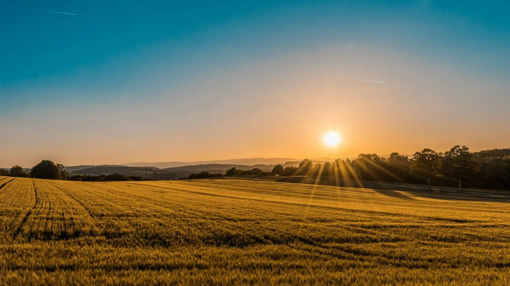
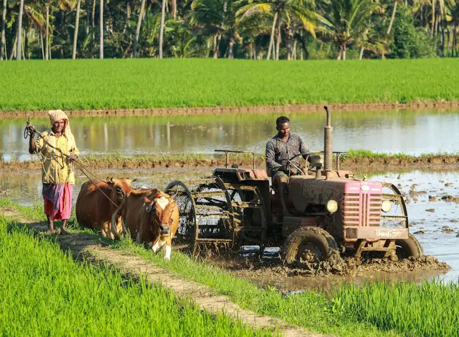
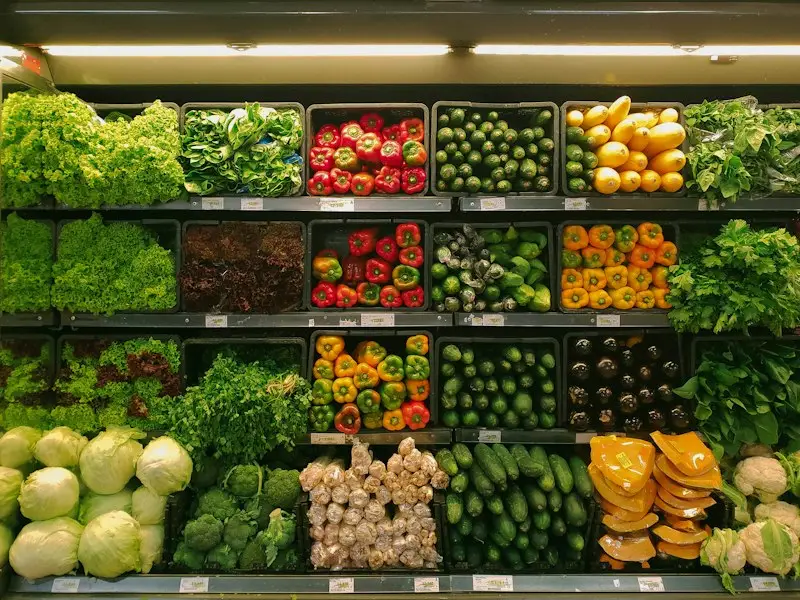

Nurturing The Earth, Empowering Farmers
We blend centuries of indigenous organic crop intelligence with 21st-century IoT precision to produce healthy food while restoring living soil ecosystems across 450+ partner farmsteads.
From A Single Organic Orchard To A Regional Agri-Tech Movement
Stackly Agriculture began with a critical mission: to rescue over-fertilized, depleted topsoils and establish a self-sustaining agricultural sanctuary in Salem, Tamil Nadu. By transitioning away from synthetic nitrogen and chemical herbicides, our founders proved that biological balance yields more resilient, nutrient-dense crops than chemical farming ever could.
Today, our certified cooperative cluster unites over 450 generational family farms with cutting-edge agronomical science, decentralized cold storage, and real-time farmer dashboards.
2014
Year Established450+
Partner Farm Families12,000+
Acres Under Stewardship0%
Synthetic Chemicals
The Pillars That Guide Every Planting & Harvest Season
Every seed we sow and every crop lot we deliver is guided by strict environmental stewardship, biological purity, and economic transparency.
Living Soil Stewardship
We view soil as a living microbial organism. Through multispecies cover crops, indigenous vermicompost, and zero-tillage methods, we build deep humus and increase organic carbon year on year.
Explore Soil Protocol ➔Fair Direct Trade
We eliminate middlemen and broker cartels. Our Produce Buyer portal establishes transparent, multi-season purchase contracts directly between institutional buyers and generational growers.
Explore Buyer Terms ➔Empirical Precision
Farming should never rely on guesswork. We deploy ground sensors that measure electrical conductivity, soil matric potential, and solar evapotranspiration in real-time.
View Tech Details ➔Milestones In Our Sustainable Agriculture Journey
From reviving degraded acreage to building South India's premier decentralized organic supply network.
Pioneering Chemical-Free Transition
Acquired 40 acres of depleted monoculture land in Chinna Thirupathi and initiated intensive biochar and microbial inoculation.
NPOP & USDA Organic Accreditation
Achieved full 3-year transition certification with zero detectable synthetic pesticide residues across 12 crop varieties.
Solar IoT & Drone Scouting Launch
Installed the region's first LoRaWAN soil moisture grid, reducing irrigation water usage by 42% while improving yields.
Decentralized Cold-Chain Hub
Inaugurated solar-powered packhouses and direct buyer dispatch terminal, maintaining sub-2% transit food loss.
Regenerating Ecosystems With Verifiable Metrics
We hold ourselves accountable to empirical ecological benchmarks tracked continuously through our telemetry systems.
Soil Organic Carbon
Up from a baseline of 0.4% in 2014 across all regenerative tracts.
Rainwater Harvested
Stored in percolation check-dams recharging local village aquifers.
Solar Energy Self-Sufficiency
Powering deep-well solar pumps, cold rooms, and sorting facilities.
Synthetic Residues
320+ independent gas chromatography lab tests per harvest cycle.
Field Scientists & Agronomists Driving Innovation
Meet the agricultural scientists and master growers stewarding our soil biology, crop health, and community alliances.
Dr. Aravind Swaminathan
Managing Director & Chief AgronomistPh.D. in Soil Microbiology with 24+ years pioneering biological rhizosphere rejuvenation and organic crop breeding across South India.

Dr. Sarah Lin
Protected Horticulture LeadInternational specialist in heirloom seed preservation, photoperiod climate automation, and biological pest balance in controlled greenhouses.

Vikram Patel
Head of Field OperationsThird-generation farmer spearheading our 450-member smallholder cooperative, direct harvest procurement, and cold-chain compliance.
Certified To The Highest International Organic Benchmarks
Independent third-party audits ensure every metric of safety, organic authenticity, and regenerative integrity.
NPOP India Certified
National Programme for Organic Production compliance across all crops and processing facilities.
USDA Organic Equivalent
Certified equivalent for bulk international produce exports and clean residue documentation.
ISO 22000 Food Safety
HACCP-compliant post-harvest handling, refrigerated sorting, and zero microbial contamination.
Demeter Biodynamic Protocol
Certified holistic farm integration including closed-loop animal manure and astrological calendar planting.
Everything You Need To Know About Our Farm Estate
Common questions from farmers, institutional buyers, and conscious consumers.
How does Stackly guarantee that produce is 100% organic?
Every harvest batch undergoes multi-residue gas chromatography testing covering 280+ known chemical pesticides and heavy metals. Results are cryptographically signed and accessible via QR codes printed on our packaging crates.
Can smallholder farmers join the Stackly Cooperative?
Yes! We actively enroll growers committed to transitioning away from synthetics. We provide bio-inputs, free agronomical telemetry installation, and multi-season guaranteed purchase contracts at 25-35% above spot market rates.
Are public and educational farm tours permitted?
We host guided agro-ecological weekend tours and university research workshops at our Chinna Thirupathi research estate. Visitors can inspect our vermicompost centers, solar nursery greenhouses, and heirloom seed bank.